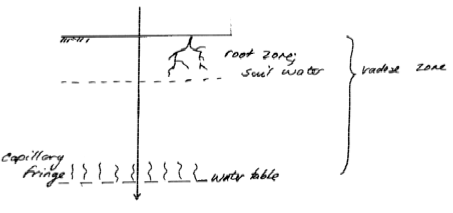
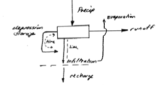
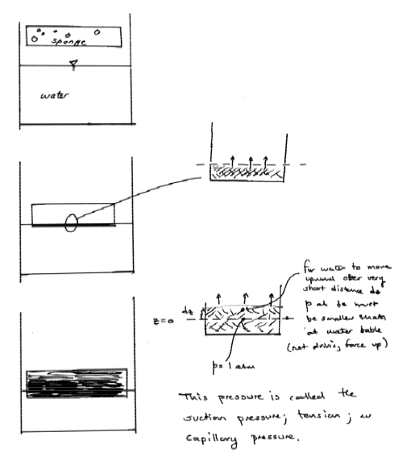
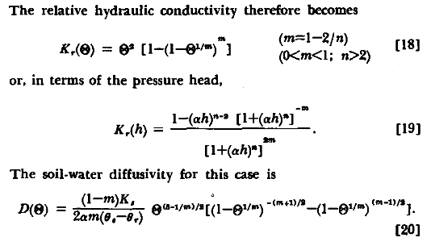

Unsaturated Zone Flow#
Unsaturated Zone Flow and Transport refers to the movement and transport of water and contaminants in the portion of the subsurface that lies above the groundwater table and contains both air and water within the pore spaces of the soil or rock. In this zone, the pore spaces are not completely saturated with water; rather, they contain a mixture of air and water, with the degree of saturation varying depending on factors such as rainfall, evaporation, and soil properties.
The unsaturated zone, also known as the vadose zone, is a critical component of the hydrological cycle. Water moves through this zone due to gravity, capillary forces, and pressure gradients. It plays a crucial role in processes like soil moisture replenishment, plant root uptake, and filtration of contaminants. Understanding unsaturated zone flow and transport is essential for managing water resources, assessing the risk of groundwater contamination, and optimizing land use practices to protect both water quality and quantity.
Infiltration#
The unsaturated zone is the portion of groundwater system where liquids and gasses share the pore space. The liquid phase may be discontinuous.

In the rainfall (or fuel spill) runoff process we can discuss the zone as a microcosm of a hydrologic cycle

Tension (suction); Capillary Pressure#

The pressure for water to move upward into the sponge (porous medium) is called the suction pressure, tension, or capillary pressure (almost interchangeably).
In the next figure - we examine the pore scale conditions in comparison to a capillary tube.

The capillary rise (capillary pressure) is related to the pore size - small pores, large negative pressure at a water table.

Soil Characteristic Curves#
pp. 291-295 of textbook discusses relationships between water content and suction pressure. Unique for each soil, but many, many soils already characterized. Methods are discussed below.

The soil characteristic curve is often modeled using one of several models such as (both models below are incorporated into Chemflo-2000):
The Brooks and Corey model is:
\( k = k_0~\text{for}~p_c \le p_b \\ k = k_0(\frac{p_b}{p_c})^n~\text{for}~p_c \ge p_b\)
Where the Brooks and Corey parameters are:
\(k_0\), saturation permeability (divide by viscosity to get hydraulic conductivity)
\(p_b\), the bubbling pressure (air entry pressure)
\(n\), pore-size distribution index (its obviously a power-law model and \(n\) is related to the pore size distribution.
The outputs are \(k\), the effective permeability at some suction pressure, \(p_c\), at a particular water content. - units are unusual (pressure is dynes/cm\(^2\)) peremability is cm\(^2\), the result needs division by dynamic viscosity to recover convential hydraulic conductivity dimensionality and units adjustment (we will let software handle this when we use ChemFlow)
The van Genuchten model (from the reference above) is:

typeset for clarity:
\(K_r(\Theta) = \Theta^2 [1-(1-\Theta^{\frac{1}{m}})^m] \\ ~~where~~ \\ m=1-\frac{2}{n}\\ 0<m<1; n>2\\ \Theta~\text{is the effective saturation}\)
The output is relative hydraulic conductivity.
Both models have been used extensively and many soils are already characterized; both documents describe how to conduct necessary experiments to determine soil properties for use in the models.
Darcy’s Law in Unsaturated Flow#
pp. 295-297 discusses unsaturated flow equations


Measurement of Soil Properties#
pg 297-298 of textbook discusses measurements


Instead of the hanging column a more modern technique uses a Tempe Cell

Relative Permeability#


Infiltration Models#
pp. 298-303 discusses infiltration models - a few are examined in my notes below

Similar plots from numerical experiments by Pickens, J. F., and Gillham, R. W. (1980), Finite element analysis of solute transport under hysteretic unsaturated flow conditions, Water Resour. Res., 16(6), 1071–1078, doi:10.1029/WR016i006p01071. are:

Green-Ampt Model#
The following is a simple model of infiltration based on Green-Ampt concept as explained by Polubarinova-Kochina, 1962 (translated by J. DeWeist)